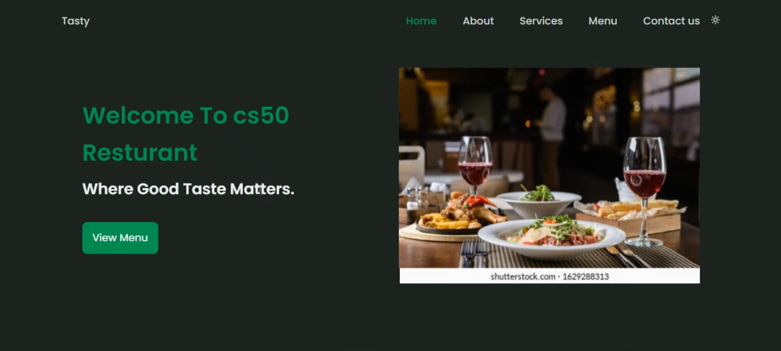
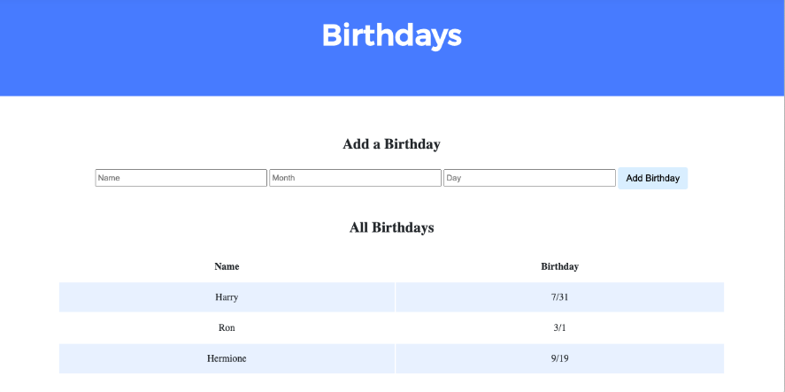

Ukamaka Anthony
About Me
Hi! I'm ukamaka Anthony Patience, a design-minded and am a software engineer, which comprises of but front end, back end and full stack development, am chiefly known for my leatest projects in codecademy on team stats, meal maker and grammer checker.
I am a self trianed software engineer, I started my software engineering journey with the Harvard University CS50 which gave me an edge on computer science as a whole and basics of popular languages like python, javascript, SQL, HTML and CSS. after completing and acquiring the CS50's certificate of completion, the journey of becoming a software developer was a very tough and challenging one, on the way i found myself diverging into the world of cloud computing which led me into studying azure fundamentals which i completed and passed the exam on that and also got a certificate on that, after that i decided to face programming squarely no matter the challenges and i delved further into learning the in depth of javascript (ES6 and ES5), at first started with pirple.com and got certified by them buh i was not certified with my coding skill in other to enhance more i started learning javascript from begining with w3schools and got certified on javascript, I joined the codecademy and also got certified in javascript. By then i was satisfied with my javascript skill but the journey still countinues i finally got admitted to ALX software engineering 12months program and still on it.
In my free time I like to read about scientific developments, test my Skills more by implementing simple codes and taking simple test to refresh my memory. I also like to take my chances of winning big.
Fun fact! I've been programing from age of 17.
Projects
CS50 Restuarant

My first project, A restuarant static website with landing page and scroll reveal, implemented using javascript, HTML and CSS.
The Birthday website

With the help of cs50 i built a Birthday website were birthdays can be saved and never be forgotten, this was implemented using html, python, sql database, css and flask with a little touch of jinja.
The Ada programming language

My work inspired the United States Department of Defense to name their new programming language after me.
Skills
Software Development.
Object-Oriented Design (OOD).
Software Testing and Debugging.
Problem Solving. Logical Thinking.
Written and Verbal Communication.
Teamwork.